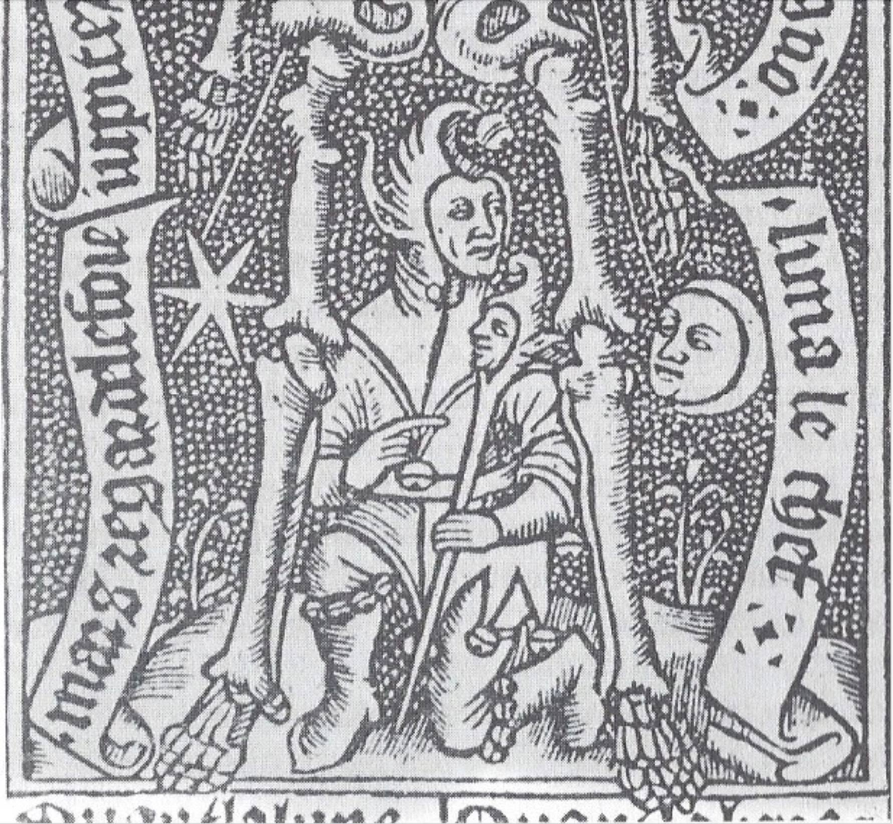
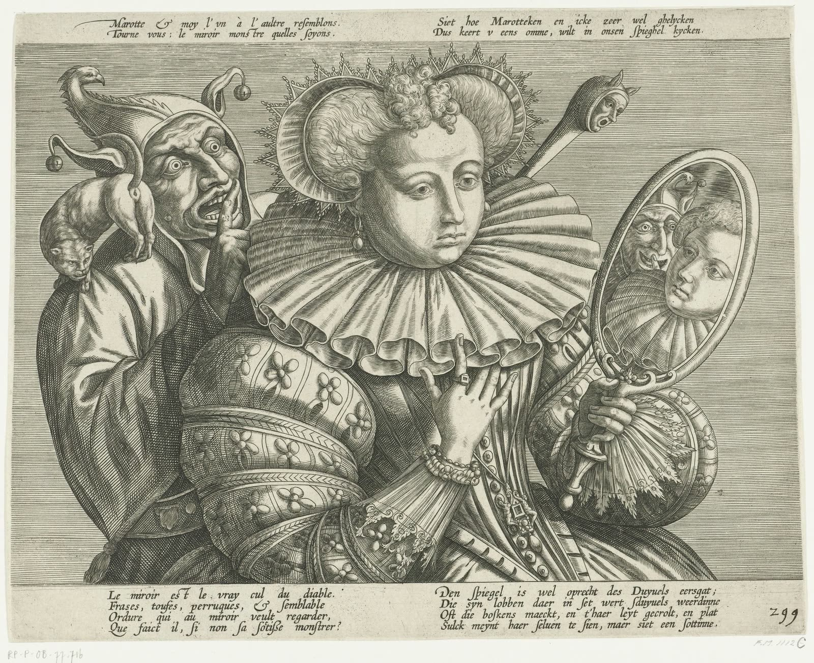

Other languages: Français
Foliage, or the art of court jesters
By Anibal Edelberto Amiot — Published September 2, 2026 · translated from the French
Before being a character on a playing card or a figure of the alchemists, the Fool is a minor god, exiled from Olympus for mocking too much. His story, from Hesiod's Theogony to the royal courts of the Renaissance, sheds light on what the jester has always done: show the prince, in a grotesque mirror, what the prince does not want to see.
Momus, son of Night
In Hesiod, Momus is born of Nyx, primordial Night, in the same brood as Moros (Doom), Thanatos (Death) and Hypnos (Sleep). His name translates as “sarcasm” or “mockery”. An occasional counsellor to Zeus, he ends up mocking the very creations of the other gods — until the assembly of Olympus, weary of him, banishes him. He finds refuge with the only god able to understand him: Dionysus, alone among the Olympians in having known madness and death before being reborn.
The link is plain from the very beginning: the first jester of Greek mythology is not admitted to the table of the mighty — he is banished from it, then taken in by the god who himself dies and is reborn.
The king's fool, mirror of the prince
Erasmus, in his Praise of Folly, notes that the greatest kings of his time could no longer do without their fools — less for the laughter than for the frankness that no one else owed them. It is this revealing function that the historian Maurice Lever singles out in Le sceptre et la marotte: there the fool is described as a “reflecting body” in which the prince can at any moment contemplate his own image — or rather, its grotesque counterfeit.
Bernard Roger, in À la découverte de l'alchimie, takes the comparison further still: in the art of ruling, the jester would be the exact equivalent of what alchemy calls the mercury of the sages — the solvent that strips royal power of its trappings the better to renew it. In support he cites an engraving from the Compost et Kalendrier des Bergers: a skeleton surrounded by the planets, and at its feet a court fool pointing to his bauble — placed exactly where the body would bear the influence of Mercury.

The staff and the wind
Two secondary figures extend this same logic. Angoulevent, jester under Henri IV, takes his name from the medieval verb engouler — to swallow — but also from engouler in the sense of to edge, to adorn: the one who at once swallows the wind and gives it finery. His contemporary Pierre du Puits had himself called « chevalier des chiffres » (“knight of ciphers”), though the exact nature of his personal cabbala is not known. In both cases, the jester's name already carries, on its own, the ambivalence of the character: devouring and adorning, ciphering and making people laugh.
The Fool of the tarot and his partner
Aleister Crowley, in The Book of Thoth, recognises in the biblical figure of the motley costume — Joseph's, Jesus's — the same symbolic solution as the Fool of the tarot: to represent the saviour in the guise of the one nobody takes seriously. He goes as far as to read, in the troupe surrounding Harlequin, a parody of the Holy Family — Pantaloon, Buffoon, Columbine.
The Fool is not alone in Crowley: the Justice card answers him as his feminine complement, a dancer in balance who weighs Alpha, the first, against Omega, the last. Fool and Justice thus form a pair — the one given over to apparent imbalance, the other mistress of all imbalance — two faces of one and the same axis.
The Fool without a number, Death without a name
The Tarot of Marseille has twenty-two trumps. Among them, two cards stand out by an absence: the Fool (le Mat) bears no number — or, in some old orderings of the deck, is relegated to the last place, the twenty-second — and arcanum XIII, Death, is the only card in the whole deck to bear no name printed beneath its image, whereas all the others, from the Emperor to the World, display theirs in full.
Now 22 reduces to 2+2=4, and 13 reduces to 1+3=4 — the very number of the Emperor, fourth trump of the deck, the only sovereign seated in majesty among the twenty-two figures. The Fool without a numerical identity and Death without a nominal identity would thus be brought back, by one and the same number, to the figure of power that each of them, in its own way, is meant to dissolve — the first by laughter, the second by the scythe. This is a numerological reading, in the strict sense: it belongs to this project, not to a third-party source establishing the link; but the facts that support it — the Fool's lack of a number, Death's lack of a name, the count of twenty-two trumps — can, for their part, be observed directly on the cards.
A butterfly of coloured glass
A later image, borrowed from Hugo Pratt, closes this journey on the same note. In Fable of Venice, the narrator remembers an immense butterfly made of shards of coloured glass, which he names “Aurélia, the gnostic butterfly”: there gnosis represents itself as an inexhaustible source of wisdom, offering each person, in a thousand reflections, what he wishes to see. It is almost the same figure as the jester himself — an object that says nothing of itself, but sends back to each person his own image, coloured differently according to who is looking.
An axis, once more
The jester's bauble — the staff with a carved head that he holds and brandishes — thus carries a double function already met elsewhere in this project: it is at once a wand, an instrument of measurement and of delegated power, and a mirror, since it shows, reduced to the scale of a hand's grip, the very head of the one who carries it. An axis that measures and reflects at once — the same figure, decidedly, that returns from one article of this project to the next, under a different name each time.

Sources mentioned: Hesiod, Théogonie (Theogony), ll. 211–215; Erasmus, Éloge de la folie (Praise of Folly); Maurice Lever, Le sceptre et la marotte; Bernard Roger, À la découverte de l'alchimie (Dangles, pp. 244, 250, 253); Aleister Crowley, Le Livre de Thot (The Book of Thoth), pp. 58, 65, 86–87; Hugo Pratt, Fables de Venise (Fable of Venice).
This article was first published in French: Foliage, ou l'origine du bouffon de cour.